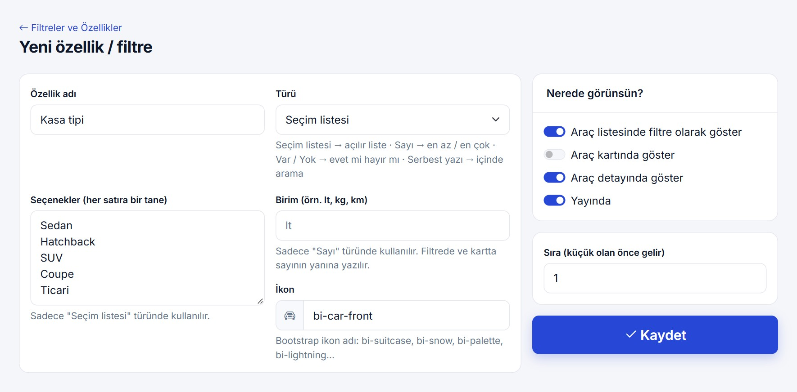
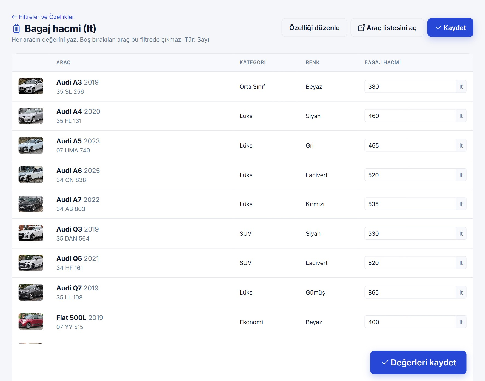
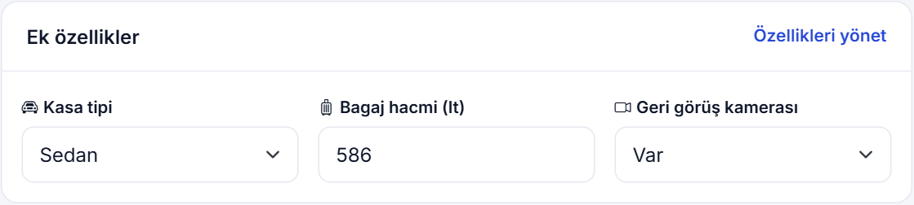
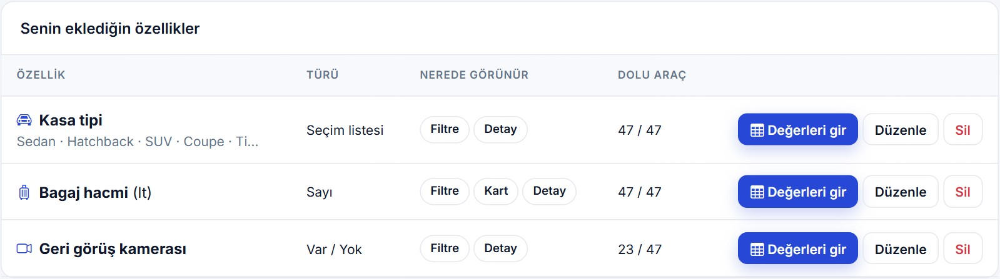
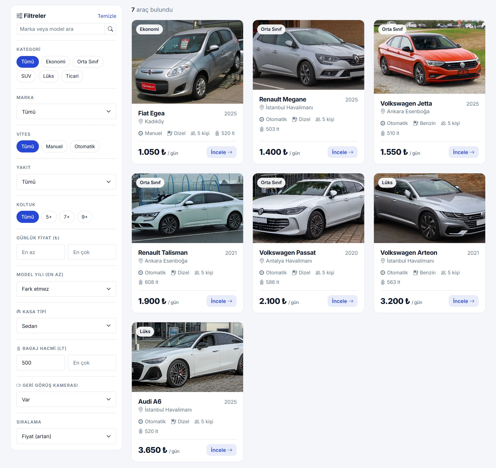
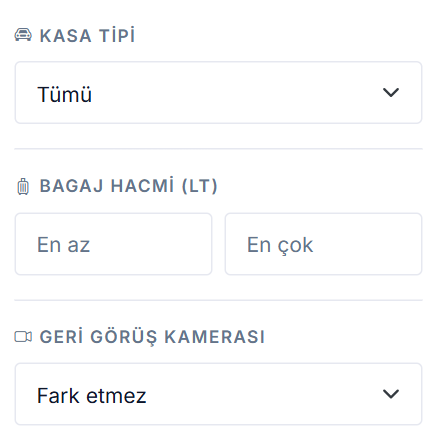
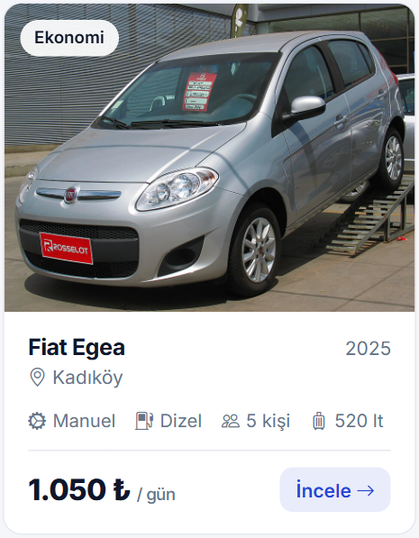

| Hazırlayanlar | Mehmet Arda Çekiç · Azra Ardıç · Esra Ağlar · Ömer Faruk Çelik |
| Danışman | Levent Civcik |
| Adres | ardcek.com/hafta4 |
Geçen hafta sitenin önemli sayfalarını tamamlamış ve Neon'daki PostgreSQL veritabanımızı bağlamıştık. Bu hafta sistemi daha esnek hale getirdik: araçlara yeni bir bilgi eklemek için artık kodu değiştirmek gerekmiyor. Yönetici özelliği panelden tanımlıyor, araçların değerlerini giriyor; özellik araç listesinde filtre, araç kartında ve detay sayfasında bilgi olarak hemen görünüyor.
İşe bir soruyla başladık: "Hocamız yarın 'araçlara bagaj hacmi ekleyin, ona göre filtrelensin' derse ne yaparız?" Bu soruya her seferinde kod yazarak değil, bir kere kurulan genel bir sistemle cevap vermek istedik.
Yeni bir bilgi için Araclar tablosuna sütun eklemek; C# sınıfını, araç formunu, listeyi, filtreyi ve detay sayfasını tek tek değiştirip sistemi yeniden yayınlamak demekti. Bunun yerine yeni bilgileri yönetim panelinden eklenebilir yapmaya karar verdik.
Bilginin tanımını ve araçlardaki değerlerini iki ayrı tabloda tutan bir yapı çizdik: AracOzellikleri ve AracOzellikDegerleri. Anahtarları, ilişkileri ve silme kurallarını belirledik (bölüm 03).
Modeller/AracOzelligi.cs dosyasına iki sınıf ve özellik türlerini yazdık, VeriTabani.cs'e iki tabloyu ve ilişkilerini ekledik. Tabloların SQL'ini Entity Framework Core bu sınıflardan kendisi üretti (bölüm 04).
Yeni özellik formu, bütün araçların değerlerini tek tabloda girme ekranı ve araç formunda "Ek özellikler" alanları.
Araç listesinde türe göre çizilen filtre kutuları (açılır liste, en az – en çok, var / yok, arama), araç kartında ve detay sayfasında gösterim.
Neon'daki tabloların boş olduğunu kontrol ettik ve tabloları güncel yapıyla yeniden oluşturduk: 23 → 25 tablo, 22 → 24 ilişki, eski tabloların sütunları birebir aynı (bölüm 06).
Üç örnek özellik ve 47 araçla 11 farklı filtre durumunda, sitede bulunan araç sayısını aynı koşulları doğrudan SQL ile sayarak karşılaştırdık. 11 durumun hepsinde sonuç birebir aynı çıktı (bölüm 07).
Yönetim paneli → Filtreler ve Özellikler. Üç adım var: özelliği tanımla, araçların değerlerini gir, sitede gör.

| Tür | Örnek | Formda ek alan | Sitedeki filtre | Kartta / detayda |
|---|---|---|---|---|
| Seçim listesi | Kasa tipi: Sedan, Hatchback, SUV, Coupe, Ticari | Seçenekler | Açılır liste | "Sedan" |
| Sayı | Bagaj hacmi (lt) | Birim: lt, kg, km… | En az – en çok kutuları | "510 lt" |
| Var / Yok | Geri görüş kamerası | — | Fark etmez / Var / Yok | Detayda "Var" / "Yok" |
| Serbest yazı | Lastik markası | — | İçinde arama | Yazının kendisi |
1250.5 hem 1.250,5 yazımıyla doğru okunur.Özellik kaydedilince bütün araçların alt alta sıralandığı tablo açılıyor. Her aracın değeri yazılıp bir kez Değerleri kaydet'e basılıyor. Kutunun türü özelliğin türüne göre değişiyor: sayı kutusu, açılır liste ya da Var / Yok listesi. Boş bırakılan aracın değeri silinir; o araç bu filtrede çıkmaz.


Araç formu, panelden eklenen özellikleri kendisi tanıyor: yeni bir özellik eklendiğinde forma yeni bir kutu kod değişmeden geliyor. Kutunun adı Ozellikler[3] gibi; köşeli parantezdeki sayı özelliğin numarası.

Kaydedilen özellik araç listesinin filtre panelinde hemen çıkıyor. Aşağıda üç filtre birlikte seçildi: Kasa tipi = Sedan, Bagaj hacmi en az 500 lt, Geri görüş kamerası = Var. 47 araçtan bu üç koşulu birden sağlayan 7 araç kaldı.

/Araclar?Oz[1]=Sedan&OzEnAz[2]=500&Oz[3]=true (bölüm 07).

Views/Araclar/Index.cshtml'de, özellikler tablosundaki her kayıt için türüne bakılarak çiziliyor: Seçim → açılır liste, Sayı → en az / en çok, Var / Yok → üç seçenekli liste, Yazı → arama kutusu. Panelden dördüncü bir özellik eklendiğinde dördüncü kutu kendiliğinden gelir.Araçlara yeni bir bilgi eklemenin iki yolu vardı. İkisini karşılaştırdık ve ikincisini seçtik.
| Id | Model | … | BagajHacmi | KasaTipi | Kamera |
|---|---|---|---|---|---|
| 43 | Jetta | … | 510 | Sedan | true |
| 27 | 206 | … | 245 | Hatchback | (boş) |
| AracOzellikleri (tanım) | ||
|---|---|---|
| 1 | Kasa tipi | Secim |
| 2 | Bagaj hacmi | Sayi |
| AracId | OzellikId | Deger |
|---|---|---|
| 43 | 1 | Sedan |
| 43 | 2 | 510 |
AracOzellikleri'ne bir satır; değerleri = AracOzellikDegerleri'ne satırlar.SayiDeger sütunuyla çözdük (sonraki sayfa).Bir aracın birçok özellik değeri olabilir; bir özelliğin de birçok araçta değeri olabilir. AracOzellikDegerleri bu iki tabloyu birbirine bağlayan ara tablodur (çoka-çok ilişki). 3. haftadaki RezervasyonEkstralari da aynı mantıkla çalışıyor.
Aşağıdaki satırlar bilgisayarımızdaki deneme veritabanından alındı (Neon'daki tablolar şu an boş).
| Id | Ad | Tur | Secenekler | Birim | Ikon | Filtrede | Kartta | Detayda | Sira | Aktif |
|---|---|---|---|---|---|---|---|---|---|---|
| 1 | Kasa tipi | Secim | Sedan| | boş | bi-car-front | ✓ | — | ✓ | 1 | ✓ |
| 2 | Bagaj hacmi | Sayi | boş | lt | bi-suitcase | ✓ | ✓ | ✓ | 2 | ✓ |
| 3 | Geri görüş kamerası | EvetHayir | boş | boş | bi-camera-video | ✓ | — | ✓ | 3 | ✓ |
| AracId | OzellikId | Deger | SayiDeger | Anlamı |
|---|---|---|---|---|
| 43 | 1 | Sedan | boş | Volkswagen Jetta'nın kasa tipi Sedan |
| 43 | 2 | 510 | 510 | Jetta'nın bagajı 510 lt |
| 43 | 3 | true | boş | Jetta'da geri görüş kamerası var |
| 27 | 1 | Hatchback | boş | Peugeot 206'nın kasa tipi Hatchback |
| 27 | 2 | 245 | 245 | 206'nın bagajı 245 lt |
| 27 numaralı aracın 3 numaralı özellik için satırı yok → Peugeot 206'da kamera yok. | ||||
Bir aracın bir özellikte tek değeri olur. Bu yüzden ayrı bir Id sütunu yerine iki sütunu birlikte birincil anahtar yaptık: (43, 2) çifti tabloda yalnızca bir kez bulunabilir. Aynı araca aynı özellik için ikinci satır yazılmaya çalışılırsa veritabanı izin vermez.
Araç ya da özellik silinince ona ait değer satırları da veritabanı tarafından silinir; sahipsiz değer kalmaz. 3. haftadaki "kullanılan marka silinemez" (Restrict) kuralının tersi: marka birçok aracın parçasıdır, değer ise sadece o araca ait bir bilgidir.
Deger sütunu yazı. Yazılar harf harf karşılaştırılır: yazı olarak "1050" < "586" çıkar, çünkü "1" < "5". "En az / en çok" filtresinin doğru çalışması için sayının numeric halini SayiDeger'de de tutuyoruz.
"Var" ise Deger = 'true' olan bir satır; "Yok" ise hiç satır yok. Gereksiz "false" satırları tutmuyoruz. "Yok" filtresi, 'true' satırı olmayan araçları getiriyor.
Tur sütununda 0, 1, 2 gibi numaralar yerine Secim, Sayi, EvetHayir yazıyor. Tabloya bakan biri kodu okumadan anlıyor; türlerin sırası kodda değişse bile kayıtlar bozulmuyor.
EF Core, OzellikId yabancı anahtarına kendiliğinden bir index ekledi (IX_AracOzellikDegerleri_OzellikId). "Bu özelliğin bütün değerleri" sorgusu, tablonun hepsini taramadan hızlı çalışır.
3. haftada olduğu gibi code-first yöntemini kullandık: tabloları SQL ile elle yazmadık. Önce C# sınıflarını yazdık, Entity Framework Core bu sınıflara bakıp tabloları kendisi üretti. Dört adımda:
public enum OzellikTuru { Secim, Sayi, EvetHayir, Yazi } // seçim listesi · sayı · var/yok · yazı public class AracOzelligi // → AracOzellikleri tablosu { public int Id { get; set; } // birincil anahtar, kendiliğinden artar [Required, MaxLength(60)] public string Ad { get; set; } // "Bagaj hacmi" public OzellikTuru Tur { get; set; } // veritabanına "Sayi" diye yazılır [MaxLength(1000)] public string? Secenekler { get; set; } // "Sedan|Hatchback|SUV" (? = boş olabilir) [MaxLength(20)] public string? Birim { get; set; } // "lt" [MaxLength(40)] public string Ikon { get; set; } = "bi-tag"; public bool FiltredeGoster { get; set; } = true; public bool KarttaGoster { get; set; } public bool DetaydaGoster { get; set; } = true; public int Sira { get; set; } public bool Aktif { get; set; } = true; public List<AracOzellikDegeri> Degerler { get; set; } = new(); // değerleri (sütun değil) } public class AracOzellikDegeri // → AracOzellikDegerleri tablosu { public int AracId { get; set; } // hangi araç → Araclar.Id public int OzellikId { get; set; } // hangi özellik → AracOzellikleri.Id [MaxLength(200)] public string Deger { get; set; } = ""; // "510", "Sedan", "true" public decimal? SayiDeger { get; set; } // 510 (sadece Sayı türünde dolu) }
Kısaltılmış hali. Modeller/Arac.cs'e de aracın değerlerine ulaşmak için bir liste eklendi: List<AracOzellikDegeri> OzellikDegerleri.
// her DbSet = bir tablo public DbSet<AracOzelligi> AracOzellikleri => Set<AracOzelligi>(); public DbSet<AracOzellikDegeri> AracOzellikDegerleri => Set<AracOzellikDegeri>();
// Araç özelliği değerleri: bir araç × bir özellik = bir satır (anahtar iki sütundan oluşur). // Araç ya da özellik silinirse ona ait değerler de kendiliğinden silinir (Cascade). model.Entity<AracOzellikDegeri>().HasKey(x => new { x.AracId, x.OzellikId }); model.Entity<AracOzellikDegeri>().HasOne(x => x.Arac).WithMany(a => a.OzellikDegerleri) .HasForeignKey(x => x.AracId).OnDelete(DeleteBehavior.Cascade); model.Entity<AracOzellikDegeri>().HasOne(x => x.Ozellik).WithMany(o => o.Degerler) .HasForeignKey(x => x.OzellikId).OnDelete(DeleteBehavior.Cascade);
Nasıl okunur? HasKey: anahtar AracId ile OzellikId'nin ikisi birlikte. HasOne(...).WithMany(...): "her değerin bir aracı var, bir aracın birçok değeri var". OnDelete(Cascade): araç silinince değerleri de silinsin.
CREATE TABLE "AracOzellikleri" ( "Id" integer GENERATED BY DEFAULT AS IDENTITY, "Ad" character varying(60) NOT NULL, "Tur" character varying(30) NOT NULL, "Secenekler" character varying(1000), "Birim" character varying(20), "Ikon" character varying(40) NOT NULL, "FiltredeGoster" boolean NOT NULL, "KarttaGoster" boolean NOT NULL, "DetaydaGoster" boolean NOT NULL, "Sira" integer NOT NULL, "Aktif" boolean NOT NULL, CONSTRAINT "PK_AracOzellikleri" PRIMARY KEY ("Id") ); CREATE TABLE "AracOzellikDegerleri" ( "AracId" integer NOT NULL, "OzellikId" integer NOT NULL, "Deger" character varying(200) NOT NULL, "SayiDeger" numeric, CONSTRAINT "PK_AracOzellikDegerleri" PRIMARY KEY ("AracId", "OzellikId"), CONSTRAINT "FK_AracOzellikDegerleri_AracOzellikleri_OzellikId" FOREIGN KEY ("OzellikId") REFERENCES "AracOzellikleri" ("Id") ON DELETE CASCADE, CONSTRAINT "FK_AracOzellikDegerleri_Araclar_AracId" FOREIGN KEY ("AracId") REFERENCES "Araclar" ("Id") ON DELETE CASCADE ); CREATE INDEX "IX_AracOzellikDegerleri_OzellikId" ON "AracOzellikDegerleri" ("OzellikId");
dotnet ef dbcontext script. Bu komut veritabanına bağlanmadan, modelden üretilecek SQL'i dosyaya yazar. Neon'daki tabloların bu komutlarla birebir aynı olduğunu (sütunlar, türler, anahtarlar, ilişkiler, index) sorguyla kontrol ettik.| C# tarafında | Neon'da (PostgreSQL) | Örnek sütun |
|---|---|---|
int Id | integer GENERATED BY DEFAULT AS IDENTITY | AracOzellikleri.Id — numara kendiliğinden artar |
string + [Required, MaxLength(60)] | character varying(60) NOT NULL | Ad |
string? + [MaxLength(20)] | character varying(20) — boş olabilir | Birim |
enum OzellikTuru | character varying(30) | Tur ("Sayi") |
bool | boolean | KarttaGoster |
decimal? | numeric — boş olabilir | SayiDeger |
HasKey(x => new { x.AracId, x.OzellikId }) | PRIMARY KEY ("AracId", "OzellikId") | bileşik anahtar |
OnDelete(DeleteBehavior.Cascade) | ON DELETE CASCADE | iki yabancı anahtar |
Türün sonundaki ? "boş olabilir" demek; soru işareti yoksa sütun NOT NULL olur. Türlerin yazı olarak saklanmasını VeriTabani.cs → ConfigureConventions içindeki tek satır sağlıyor.
Hepsi src/AracKiralama.Web/ klasörünün içinde. Bağlantı dosyalarına (Program.cs'deki adres okuma, NeonBaglantisi.cs) bu hafta dokunulmadı.
| Dosya | Ne var? |
|---|---|
| Veritabanı | |
Modeller/AracOzelligi.cs YENİ | AracOzelligi, AracOzellikDegeri sınıfları ve OzellikTuru (4 tür); değeri türüne göre temizleyen Temizle |
Modeller/Arac.cs | Aracın özellik değerleri listesi (OzellikDegerleri) |
Veri/VeriTabani.cs | 2 DbSet, bileşik anahtar, iki Cascade ilişkisi |
| Yönetim paneli | |
Areas/Yonetim/Controllers/OzelliklerController.cs YENİ | Özellik listesi, ekle, düzenle, sil, değerleri gir |
Areas/Yonetim/Views/Ozellikler/ YENİ | Index (liste), Form (ekle / düzenle), Degerler (toplu değer girme) |
FormModelleri/YonetimFormlari.cs | OzellikFormu (form ve doğrulama), OzellikDegerleriSayfasi, araç formunda Ozellikler |
Areas/Yonetim/Controllers/AracControllerlari.cs | Araç kaydedilirken "Ek özellikler" değerlerinin yazılması |
Areas/Yonetim/Views/Araclar/Form.cshtml | "Ek özellikler" kartı |
| Site | |
FormModelleri/SiteModelleri.cs | AracFiltresi: Oz, OzEnAz, OzEnCok sözlükleri |
Controllers/AraclarController.cs | Filtre sorguları; detayda gösterilecek özellikler |
Views/Araclar/Index.cshtml | Filtre kutuları (türüne göre) |
Views/Shared/_AracKarti.cshtml | Kartta gösterim ("Araç kartında göster" işaretliyse) |
Views/Araclar/Detay.cshtml | Detayda özellik kutuları |
OzelliklerController.Degerler her aracın kutusuna bakıyor: boşsa o aracın satırı silinir (DELETE), satır yoksa eklenir (INSERT), varsa güncellenir (UPDATE). Sayı türünde SayiDeger de aynı anda doldurulur. Hepsi tek bir SaveChangesAsync() ile, tek seferde veritabanına yazılır.Bağlantıyı 3. haftada kurduk; bu hafta iki yeni tablo aynı bağlantı üzerinden eklendi. Bağlantının bütün zinciri şöyle:
| Parça | Anlamı |
|---|---|
postgresql:// | Bağlantı türü: "bu bir PostgreSQL veritabanı". |
neondb_owner | Veritabanı kullanıcısı (veritabanının sahibi). |
******** | Şifre. Gizli; raporda da gösterilmiyor. |
ep-…-pooler…neon.tech | Sunucu adresi. -pooler: bağlantı havuzu üzerinden bağlan. eu-central-1: Frankfurt. |
arackiralama | Bağlanılacak veritabanının adı. |
sslmode=require | Bağlantı mutlaka şifreli (SSL/TLS) olsun. |
channel_binding=require | Şifreli kanalın gerçekten Neon sunucusuyla kurulduğunu doğrular. |
Alan var ama boş. GitHub'da görünen tek şey bu boş alan.
Environment sayfasında ConnectionStrings__PostgreSql ortam değişkeni.
dotnet user-secrets: proje klasörünün dışında saklanır, GitHub'a gitmez.
var postgreBaglantisi = PostgreBaglantisi.Duzenle(builder.Configuration.GetConnectionString("PostgreSql")); var sayfalarNeondan = builder.Configuration["VeriTabani:SayfalarNeredenOkusun"] == "Neon" && !string.IsNullOrWhiteSpace(postgreBaglantisi); builder.Services.AddDbContext<VeriTabani>(secenek => { if (sayfalarNeondan) secenek.UseNpgsql(postgreBaglantisi); // Neon (PostgreSQL) else secenek.UseSqlite($"Data Source={...}/arackiralama.db"); // örnek veri (SQLite) }); // Neon adresi varsa: arka planda Neon'a bağlan, tabloları hazırla (veri yazılmaz) if (!string.IsNullOrWhiteSpace(postgreBaglantisi) && !sayfalarNeondan) _ = Task.Run(() => NeonBaglantisi.TablolariHazirlaAsync(postgreBaglantisi, app.Logger));
await using var neon = new VeriTabani(new DbContextOptionsBuilder<VeriTabani>().UseNpgsql(baglantiAdresi).Options); var simdiOlustu = await neon.Database.EnsureCreatedAsync(); // tablolar yoksa oluştur, varsa dokunma var tablolar = await TablolariListeleAsync(neon); // SELECT table_name FROM information_schema.tables ... logger.LogInformation("Neon bağlantısı kuruldu: {Sayi} tablo hazır, toplam {Satir} satır.", ...); // Neon'a ulaşılamazsa (internet yoksa) site çökmez, sadece uyarı yazılır (try / catch)
Npgsql.EntityFrameworkCore.PostgreSQL 10.0.3 · Microsoft.EntityFrameworkCore.Sqlite 10.0.12 · Microsoft.AspNetCore.Identity.EntityFrameworkCore 10.0.12Yeni tabloları kodda tanımlamak yetmedi; Neon'da da oluşmaları gerekiyordu.
EnsureCreated çalıştırıyor. Bu komut veritabanında hiç tablo yoksa hepsini oluşturur; tablo varsa hiçbir şey yapmaz. Neon'da 3. haftadan kalan 23 tablo olduğu için iki yeni tablo kendiliğinden oluşmadı.EF Core farkı hesaplar, sadece eksik tabloları ekler. Veriler dururken yapı değiştirmenin doğru yolu; projemiz şu an migration kullanmıyor.
Tablolar boş olduğu için silip yeniden oluşturmak hiçbir veri kaybettirmez. Yeni yapı yine C# sınıflarından gelir.
Her tablonun satır sayısını tek tek saydık: 23 tablo, toplam 0 satır. Dolu bir tablo olsaydı burada dururduk.
23 boş tabloyu tek bir transaction içinde sildik (DROP TABLE … CASCADE): ya hepsi silinir ya hiçbiri.
Uygulamayı açtık; NeonBaglantisi.cs Neon'u boş bulunca EnsureCreated tabloları güncel modelden oluşturdu.
Tablo, sütun, anahtar ve ilişki listesini Neon'dan alıp güncelleme öncesiyle karşılaştırdık. Uygulama yeniden açıldığında kayda şu satır düştü:
| Neon'da | 3. hafta | 4. hafta |
|---|---|---|
| Tablo | 23 | 25 |
| İlişki (yabancı anahtar) | 22 | 24 |
| Toplam sütun | 217 | 232 (+11 +4) |
| Satır | 0 | 0 |
| Eski 23 tablonun sütunları | — | aynı ✓ |
CREATE TABLE'ı elle çalıştırmadık? Yapabilirdik; ama o zaman Neon'daki yapı ile koddaki model ayrı ayrı, elle yönetilirdi ve bir gün aralarında fark oluşabilirdi. Tabloları her zaman modelden ürettirerek tek bir doğruluk kaynağımız oluyor: C# sınıfları.dotnet ef migrations add AracOzellikleri farkı hesaplar, dotnet ef database update sadece iki yeni tabloyu ekler; veriler yerinde kalır. Veriler Neon'a taşındıktan sonra bu yolu kullanmamız gerekecek.Seçilen filtreler adres çubuğuna yazılıyor; sunucu adresi okuyup veritabanına bir sorgu gönderiyor.
/Araclar?Oz[1]=Sedan&OzEnAz[2]=500&Oz[3]=true — Oz[1]=Sedan: Kasa tipi (1) Sedan. OzEnAz[2]=500: Bagaj hacmi (2) en az 500. Oz[3]=true: Geri görüş kamerası (3) var. Köşeli parantezdeki sayı, özelliğin AracOzellikleri'ndeki Id'si.
ASP.NET Core bu adresi AracFiltresi sınıfındaki sözlüklere kendisi dolduruyor (FormModelleri/SiteModelleri.cs):
public Dictionary<int, string?>? Oz { get; set; } // seçim, var/yok, yazı → { 1: "Sedan", 3: "true" } public Dictionary<int, decimal?>? OzEnAz { get; set; } // sayı: en az → { 2: 500 } public Dictionary<int, decimal?>? OzEnCok { get; set; } // sayı: en çok
Her seçilen özellik için sorguya bir koşul ekleniyor: "bu özellikte şu değere sahip bir satırı olan araçlar".
foreach (var (ozellikId, deger) in filtre.Oz ?? new()) { // "Yok" seçildiyse: 'true' satırı OLMAYAN araçlar if (tur == OzellikTuru.EvetHayir && deger == "false") sorgu = sorgu.Where(a => !a.OzellikDegerleri.Any(d => d.OzellikId == ozellikId && d.Deger == "true")); // Serbest yazı: değerin içinde arama else if (tur == OzellikTuru.Yazi) sorgu = sorgu.Where(a => a.OzellikDegerleri.Any(d => d.OzellikId == ozellikId && d.Deger.ToUpper().Contains(aranan))); // Seçim listesi ve "Var": değeri birebir aynı olan else sorgu = sorgu.Where(a => a.OzellikDegerleri.Any(d => d.OzellikId == ozellikId && d.Deger == deger)); } // Sayı: en az (en çok da aynı, <= ile) foreach (var (ozellikId, enAz) in filtre.OzEnAz ?? new()) sorgu = sorgu.Where(a => a.OzellikDegerleri.Any(d => d.OzellikId == ozellikId && d.SayiDeger >= enAz));
EF Core Any(...)'yi SQL'de EXISTS'e çeviriyor. Her filtre bir EXISTS daha ekliyor; hepsi AND ile bağlı olduğu için araç bütün koşulları sağlamalı. Gerçek sorguda marka, şube gibi tabloların birleştirmeleri (JOIN), sıralama ve sayfalama da var; aşağıda yalnızca özellik filtresinin mantığı gösteriliyor.
SELECT a.* FROM "Araclar" AS a WHERE a."Durum" <> 'Pasif' AND EXISTS (SELECT 1 FROM "AracOzellikDegerleri" AS d WHERE d."AracId" = a."Id" AND d."OzellikId" = 1 AND d."Deger" = 'Sedan') AND EXISTS (SELECT 1 FROM "AracOzellikDegerleri" AS d WHERE d."AracId" = a."Id" AND d."OzellikId" = 2 AND d."SayiDeger" >= 500) AND EXISTS (SELECT 1 FROM "AracOzellikDegerleri" AS d WHERE d."AracId" = a."Id" AND d."OzellikId" = 3 AND d."Deger" = 'true');
Bilgisayarımızdaki deneme veritabanında (47 araç, 3 örnek özellik, 117 değer satırı) 11 farklı durumda iki sayıyı karşılaştırdık: sitenin "… araç bulundu" yazdığı sayı ve aynı koşulların SQL ile doğrudan veritabanında sayılması.
| Filtre | Sitede | SQL ile | |
|---|---|---|---|
| Filtre yok | 47 | 47 | ✓ |
| Kasa tipi = Sedan | 16 | 16 | ✓ |
| Kasa tipi = Hatchback | 14 | 14 | ✓ |
| Kasa tipi = SUV | 8 | 8 | ✓ |
| Kasa tipi = Coupe | 2 | 2 | ✓ |
| Kasa tipi = Ticari | 7 | 7 | ✓ |
| Bagaj hacmi ≥ 500 lt | 27 | 27 | ✓ |
| Bagaj hacmi 400 – 600 lt | 23 | 23 | ✓ |
| Geri görüş kamerası = Var | 23 | 23 | ✓ |
| Geri görüş kamerası = Yok | 24 | 24 | ✓ |
| Sedan + ≥ 500 lt + kamera var | 7 | 7 | ✓ |
| Araç | Bagaj |
|---|---|
| Fiat Egea | 520 lt |
| Renault Megane | 503 lt |
| Volkswagen Jetta | 510 lt |
| Renault Talisman | 608 lt |
| Volkswagen Passat | 586 lt |
| Volkswagen Arteon | 563 lt |
| Audi A6 | 520 lt |
Deger = 'true' satırı var; diğer 24 aracın bu özellik için hiç satırı yok. "Yok" filtresi NOT EXISTS ile tam bu 24 aracı buluyor. Tanımlanmamış ya da boş bırakılmış değer de "yok" sayılıyor.Aşağıdaki liste Neon'a bağlanılarak çıkarılmış gerçek listedir. Satır sayılarının hepsi şu an 0. Yeşil satırlar bu hafta eklendi; diğerleri 3. haftadakiyle birebir aynı.
| Tablo | Ne tutar? | Sütun |
|---|---|---|
| Araç özellikleri (bu hafta) | ||
| AracOzellikleri | Özelliğin tanımı: adı, türü, seçenekleri, birimi, nerede görüneceği | 11 |
| AracOzellikDegerleri | Aracın o özellikteki değeri | 4 |
| İşletme | ||
| Araclar | Araç filosu | 19 |
| Rezervasyonlar | Kiralama talepleri ve kiralamalar | 32 |
| RezervasyonEkstralari | Rezervasyona eklenen ek hizmetler | 4 |
| Odemeler | Alınan ödemeler | 8 |
| Hasarlar | İadede tespit edilen hasarlar | 5 |
| Bakimlar | Araç bakım kayıtları | 9 |
| Tanımlar | ||
| Markalar | Audi, Fiat, Ford… | 4 |
| Kategoriler | Ekonomi, SUV… (en az yaş, ehliyet yılı) | 8 |
| YakitTurleri | Benzin, Dizel, LPG… | 3 |
| VitesTurleri | Manuel, Otomatik | 3 |
| Subeler | Şubeler (adres, telefon) | 5 |
| Ekstralar | Ek hizmetler ve günlük fiyatları | 6 |
| Tablo | Ne tutar? | Sütun |
|---|---|---|
| Site içeriği | ||
| SiteAyarlari | Firma bilgisi, renkler, fiyat kuralları, filtre ayarları | 49 |
| Sayfalar | Hakkımızda gibi içerik sayfaları | 9 |
| Metinler | Sitedeki yazıların değiştirilmiş hali | 2 |
| Gorseller | Yüklenen resimler | 5 |
| Üyelik (ASP.NET Identity) | ||
| AspNetUsers | Kullanıcılar (+ ad, soyad, doğum ve ehliyet tarihi) | 24 |
| AspNetRoles | Roller: Admin, Personel, Müşteri | 4 |
| AspNetUserRoles | Hangi kullanıcı hangi rolde | 2 |
| AspNetUserClaims | Kullanıcıya ek bilgiler | 4 |
| AspNetUserLogins | Dış hesapla giriş (kullanılmıyor) | 4 |
| AspNetUserTokens | Şifre sıfırlama gibi belirteçler | 4 |
| AspNetRoleClaims | Role ek yetkiler | 4 |
Ok, yabancı anahtarın gösterdiği tabloya doğru çizilmiştir. Yeşil kutular bu hafta eklenen iki tablo.
| İlişki | Anlamı | Silme kuralı |
|---|---|---|
| AracOzellikDegerleri → Araclar YENİ | Her değer bir araca ait | Araç silinirse değerleri de silinir (Cascade) |
| AracOzellikDegerleri → AracOzellikleri YENİ | Her değer bir özelliğe ait | Özellik silinirse bütün değerleri silinir (Cascade) |
| Araclar → Markalar, Kategoriler, YakitTurleri, VitesTurleri, Subeler | Her aracın markası, kategorisi, yakıtı, vitesi ve şubesi var | Kullanılan tanım silinemez (Restrict) |
| Rezervasyonlar → Araclar, AspNetUsers, Subeler (2 kez) | Hangi müşteri, hangi aracı, hangi şubeden alıp hangisine bırakacak | Kiralaması olan araç silinemez |
| RezervasyonEkstralari → Rezervasyonlar, Ekstralar | Bir rezervasyonda birden çok ek hizmet (çoka-çok) | — |
| Odemeler, Hasarlar → Rezervasyonlar · Bakimlar → Araclar | Ödeme, hasar ve bakım kayıtları bir kiralamaya / araca ait | — |
Toplam 24 yabancı anahtar: 15'i bizim tablolarımız arasında (bu hafta +2), 3'ü rezervasyon ve ödemeden kullanıcıya (müşteri, işlemi yapan personel, ödemeyi alan), 6'sı üyelik (AspNet…) tablolarının kendi arasında.
"Yeni tabloları göster" denirse Neon panelinden, "nasıl çalıştığını göster" denirse sistemin kendisinden gösterebiliriz.
console.neon.tech → projemiz → soldan Tables (veritabanı: arackiralama). 25 tablo listelenir. AracOzellikleri ve AracOzellikDegerleri'ne tıklayınca sütunları ve (şimdilik boş) içerikleri görünür.
Aşağıdaki sorguların hepsini Neon'da çalıştırıp sonuçlarını kontrol ettik:
-- Tablo sayısı (25) SELECT COUNT(*) FROM information_schema.tables WHERE table_schema = 'public'; -- Bu hafta eklenen iki tablonun sütunları ve türleri (15 satır) SELECT table_name, column_name, data_type, is_nullable FROM information_schema.columns WHERE table_name IN ('AracOzellikleri', 'AracOzellikDegerleri') ORDER BY table_name, ordinal_position; -- Bileşik anahtar ve iki Cascade ilişkisi SELECT conname, pg_get_constraintdef(oid) FROM pg_constraint WHERE conrelid = '"AracOzellikDegerleri"'::regclass AND contype IN ('p', 'f'); -- Satır sayıları (şimdilik 0) SELECT COUNT(*) FROM "AracOzellikleri"; SELECT COUNT(*) FROM "AracOzellikDegerleri";
| conname | pg_get_constraintdef |
|---|---|
| PK_AracOzellikDegerleri | PRIMARY KEY ("AracId", "OzellikId") |
| FK_AracOzellikDegerleri_AracOzellikleri_OzellikId | FOREIGN KEY ("OzellikId") REFERENCES "AracOzellikleri"("Id") ON DELETE CASCADE |
| FK_AracOzellikDegerleri_Araclar_AracId | FOREIGN KEY ("AracId") REFERENCES "Araclar"("Id") ON DELETE CASCADE |
"AracOzellikleri". Tırnaksız yazılırsa PostgreSQL adı küçük harfe çevirir ve relation "aracozellikleri" does not exist hatası verir.Canlı sunucu her açılışında Neon'a bağlanıp tabloları sayıyor. Bu güncellemeden sonraki açılışlarda kayıtta 25 tablo hazır, toplam 0 satır satırı görünür.
dotnet run → Yönetim → Filtreler ve Özellikler → Yeni özellik / filtre: "Bluetooth", türü Var / Yok → birkaç araca "Var" → Araç listesini aç: solda "Bluetooth" filtresi çıkar.
Hocamızın bu hafta sorabileceğini düşündüğümüz sorular ve kısa cevapları. Her cevabın ayrıntısı raporun önceki bölümlerinde.
AracOzellikleri özelliğin tanımını (adı, türü, seçenekleri, birimi, nerede görüneceği), AracOzellikDegerleri hangi aracın o özellikte hangi değere sahip olduğunu tutuyor.SayiDeger sütunu ekleyerek çözdük.AracOzellikleri.Secenekler sütununda, dik çizgiyle ayrılmış tek bir yazı olarak: Sedan|Hatchback|SUV|Coupe|Ticari. Formda her satıra bir seçenek yazılıyor.VeriTabani.cs'e DbSet ve ilişkileri ekledik. EF Core CREATE TABLE komutlarını üretip Neon'da çalıştırdı.dotnet ef dbcontext script ile görüp rapora koyduk. Kontrol ve gösterim için SELECT sorguları yazdık.int → integer, string (MaxLength 60) → character varying(60), bool → boolean, decimal? → numeric (boş olabilir), enum → character varying(30).OzellikId sütununda (IX_AracOzellikDegerleri_OzellikId) var; EF Core kendisi ekledi.Program.cs adresi okuyor, NeonBaglantisi.cs Npgsql sürücüsüyle bağlanıp tabloları hazırlıyor ve sayıyor.dotnet user-secrets'ta, canlı sunucuda Render'daki ConnectionStrings__PostgreSql ortam değişkeninde. appsettings.json'daki alan boş.AracOzellikleri.Id). ASP.NET Core bu adresi AracFiltresi'ndeki sözlüğe (Dictionary<int, string>) kendisi dolduruyor.Any(), SQL'de EXISTS'e dönüşüyor.Views/Araclar/Index.cshtml); sorgu da her özellik için aynı kodla kuruluyor.OzellikTuru'na yeni bir tür eklenir, formdaki, filtredeki ve değer tablosundaki tür seçimlerine o türün kutusu yazılır. Tablolar değişmez; çünkü tür yazı olarak, değer de Deger sütununda yazı olarak tutuluyor.Rollerimizi geçen haftaki gibi koruduk: veritabanı, liste ve filtreler, formlar, test ve rapor.
AracOzelligi.cs sınıfları ve VeriTabani.cs'teki ilişkilerAraclarController, Any → EXISTS)| İş | Arda | Azra | Esra | Ömer |
|---|---|---|---|---|
| Tablo tasarımı (AracOzellikleri, AracOzellikDegerleri) | Sorumlu | destek | ||
| C# sınıfları ve ilişkiler (VeriTabani.cs) | Sorumlu | destek | ||
| Neon'un güncellenmesi (23 → 25) | Sorumlu | destek | ||
| Filtre kutuları ve filtre sorguları | Sorumlu | destek | ||
| Araç kartında gösterim | Sorumlu | |||
| Özellik formu ve doğrulamalar | Sorumlu | |||
| Toplu değer girme ekranı | destek | Sorumlu | ||
| Araç formunda ek özellikler, detayda gösterim | Sorumlu | |||
| Test (site ↔ SQL) | destek | destek | destek | Sorumlu |
| Yayın | Sorumlu | |||
| Rapor ve soru-cevap | destek | destek | destek | Sorumlu |
| Terim | Anlamı |
|---|---|
| Özellik (bu projede) | Panelden araçlara eklenen bilgi: Kasa tipi, Bagaj hacmi… |
| EAV | Entity–Attribute–Value: bilginin tanımını ve değerlerini ayrı tablolarda tutma yöntemi. |
| Birincil anahtar (PK) | Her satırı benzersiz tanıtan sütun ya da sütunlar. |
| Bileşik anahtar | Birden çok sütundan oluşan birincil anahtar: (AracId, OzellikId). |
| Yabancı anahtar (FK) | Başka tablodaki bir satıra işaret eden sütun (AracId → Araclar.Id). |
| Ara tablo / çoka-çok ilişki | İki tabloyu birbirine bağlayan tablo; bir aracın çok özelliği, bir özelliğin çok aracı olabilir. |
| Cascade / Restrict | Silme kuralı: bağlı satırları da sil / bağlı satır varsa silmeye izin verme. |
| Index | Aramayı hızlandıran yapı; kitabın sonundaki dizin gibi. |
| Transaction | Birden çok işlemin "ya hepsi ya hiçbiri" şeklinde yapılması. |
| EXISTS / NOT EXISTS | SQL'de "şu koşulu sağlayan en az bir satır var mı / yok mu?" |
| LINQ, Any() | C# içinde sorgu yazma yolu; Any() "en az bir tane var mı?" demek. |
| Model binding | ASP.NET Core'un adres ve form bilgilerini C# nesnelerine kendisi doldurması. |
| Enum | Sabit seçenekler listesi (OzellikTuru: Secim, Sayi, EvetHayir, Yazi). |
| character varying / numeric | PostgreSQL'de yazı / ondalıklı sayı türleri. |
| NOT NULL | Sütun boş bırakılamaz. |
| Code-first | Önce C# sınıflarını yazıp tabloları onlardan ürettirme yöntemi. |
| EnsureCreated | Veritabanında hiç tablo yoksa hepsini oluşturan EF Core komutu. |
| Migration | Veriler dururken tablo yapısını adım adım güncelleme yöntemi. |
| dotnet ef | EF Core'un komut satırı aracı (SQL üretme, migration). |
| Bağlantı adresi (connection string) | Programın veritabanına bağlanması için gereken bilgileri tek satırda toplayan yazı. |
| Neon / PostgreSQL / Npgsql | Bulut veritabanı hizmeti / veritabanı sistemi / .NET'in PostgreSQL sürücüsü. |
| Kaynak | Adres |
|---|---|
| EF Core: anahtarlar (bileşik anahtar) | https://learn.microsoft.com/ef/core/modeling/keys |
| EF Core: zincirleme silme (cascade delete) | https://learn.microsoft.com/ef/core/saving/cascade-delete |
| EF Core: EnsureCreated ve migration | https://learn.microsoft.com/ef/core/managing-schemas/ensure-created |
| EF Core komut satırı aracı (dotnet ef) | https://learn.microsoft.com/ef/core/cli/dotnet |
| PostgreSQL: EXISTS alt sorguları | https://www.postgresql.org/docs/current/functions-subquery.html |
| Npgsql EF Core sağlayıcısı | https://www.npgsql.org/efcore/ |
| Neon belgeleri | https://neon.com/docs |
| Entity–attribute–value modeli | https://en.wikipedia.org/wiki/Entity–attribute–value_model |